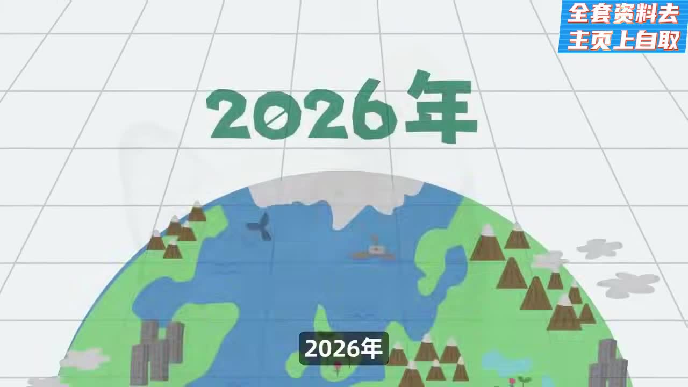
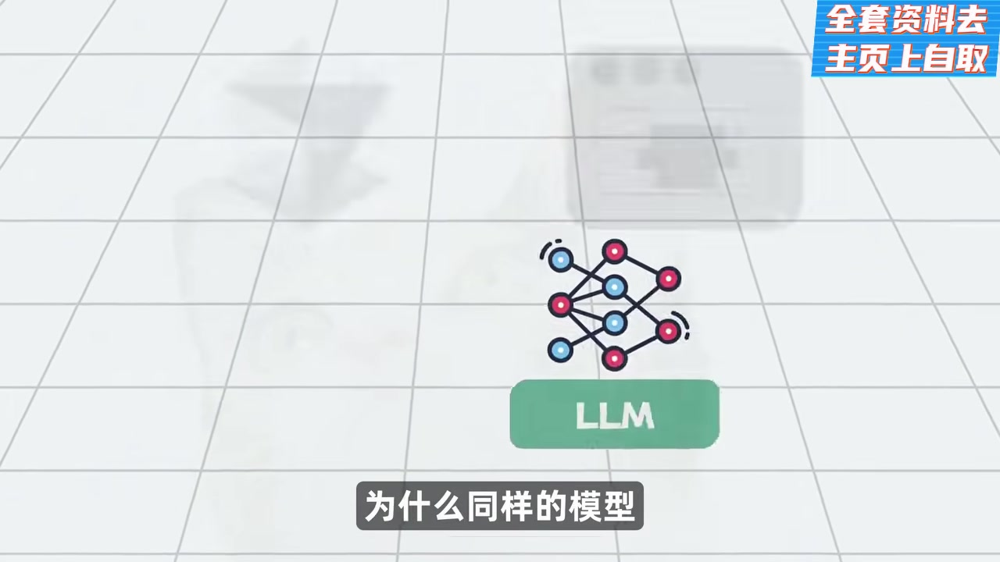
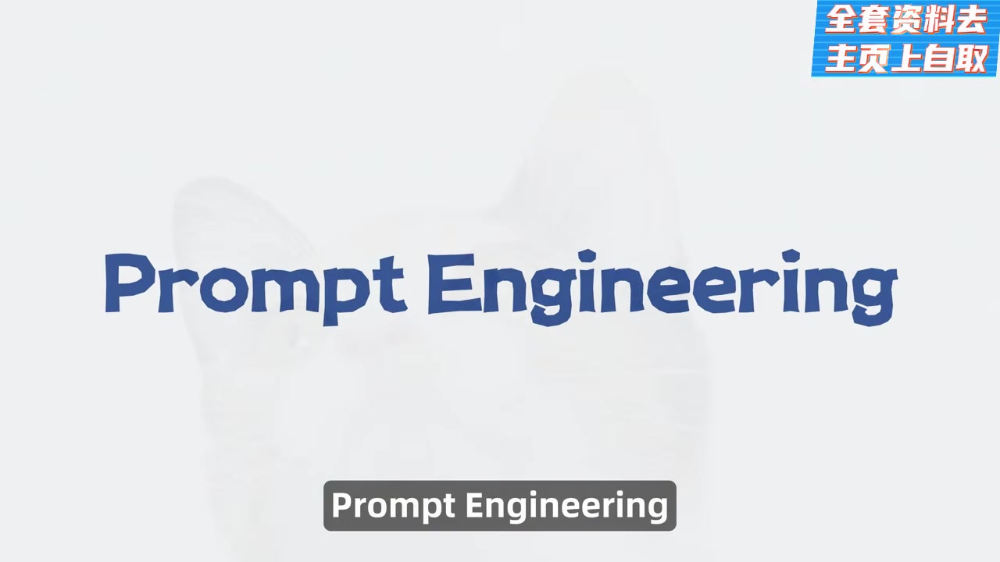
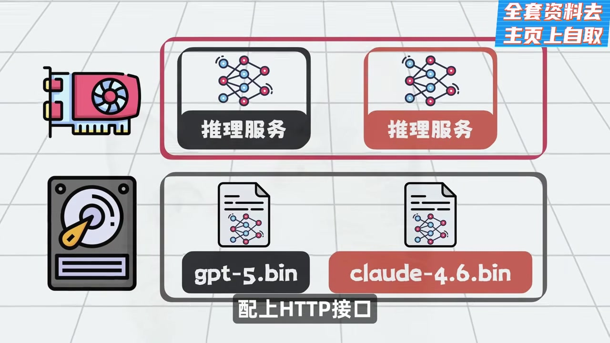
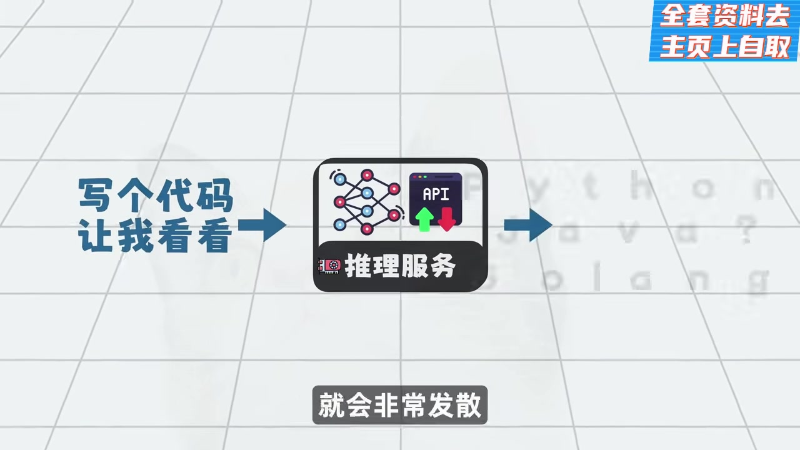
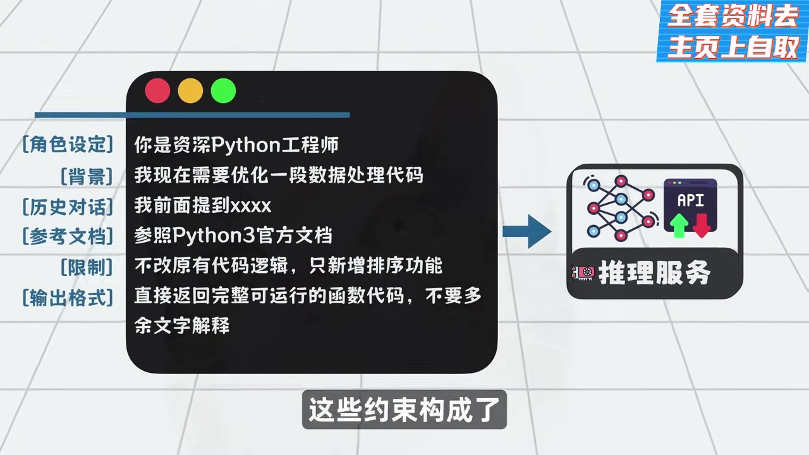
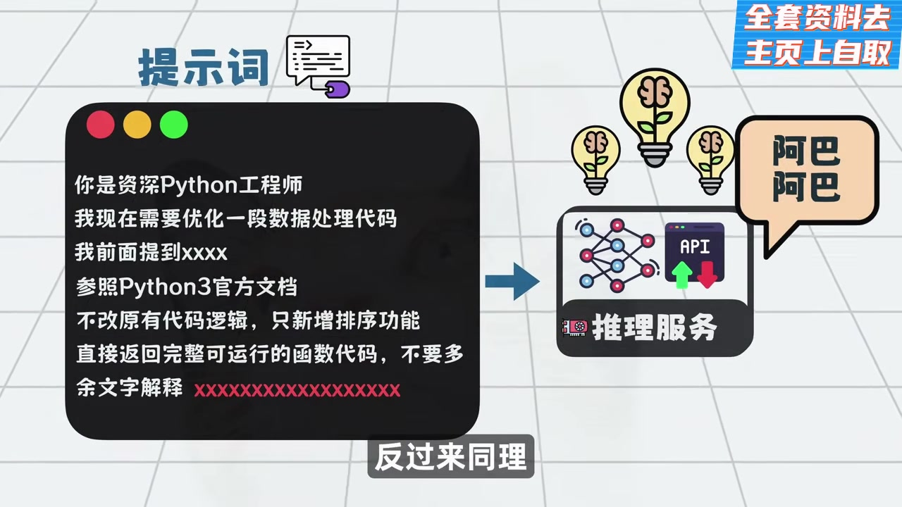
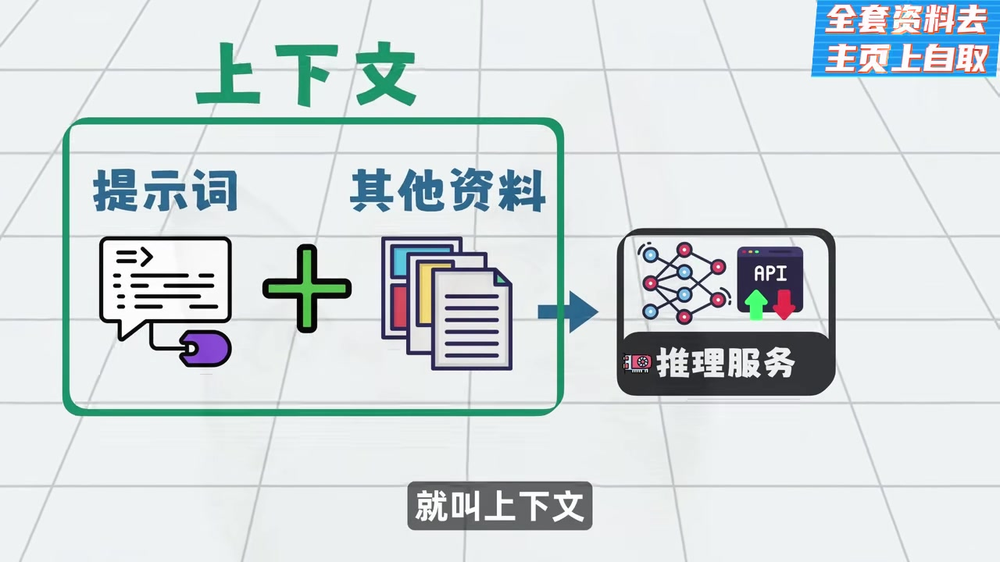
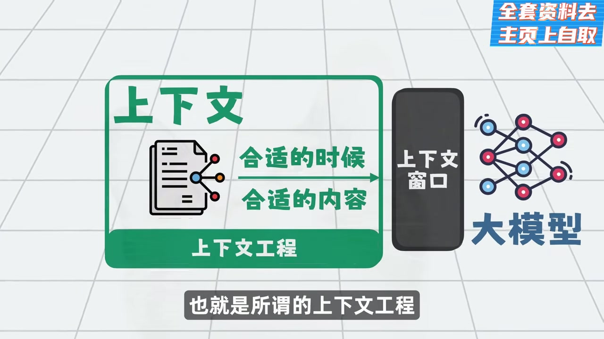
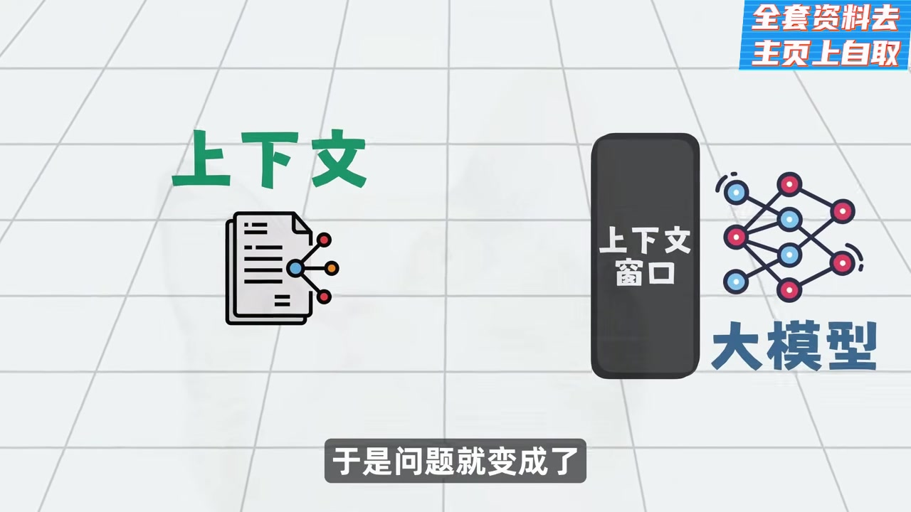

這份簡報根據影片音訊逐字稿與代表性架構圖整理，目標是把影片的核心概念講懂、講順，讓你能真正理解 Prompt Engineering、Context Engineering 與 Harness Engineering 的關係。

Prompt Engineering 是教模型怎麼回答；Context Engineering 是決定模型看到什麼；Harness Engineering 則是把模型放進一個可執行、可記憶、可回饋、可編排的工程系統裡，讓它真正能交付任務。

圖 1｜高品質 Prompt 的組成
角色設定、背景、歷史、參考文件、限制條件、輸出格式，共同組成了 Prompt Engineering 的操作對象。

圖 2｜Prompt 只是 Context 的一部分
影片明確指出：提示詞不是全部，上下文還包含其他資料來源。這是從 Prompt Engineering 走向 Context Engineering 的關鍵轉折。
模型本質上是預測下一個 token 的系統。如果你給它的指令太籠統，輸出就會發散；如果你把角色、目標、限制、格式講清楚，輸出就會穩定許多。

圖 3｜Context Window
影片用這張圖說明：不是所有資訊都能一起進模型，真正的瓶頸是有限的上下文視窗。

圖 4｜召回、壓縮、組裝
這是影片最重要的 Context Engineering 架構圖。作者將其拆成三步：找到資訊、把資訊變小、把資訊重新排列進入模型。
影片特別指出：即使底層模型相同，不同工具只要 Context Engineering 策略不同，效果就會差很多。

圖 5｜模型思考 + 執行層 + 回饋迴圈
模型不再只是回答，而是被放進一個「思考 → 執行 → 回饋 → 再思考」的循環。

圖 6｜規則文件 / 記憶層
像 CLAUDE.md 這種規則文件，承載專案目標、技術棧、風格與禁止事項，幫助 Agent 在長循環中維持方向。
作者把模型外面的工程外殼分成幾層來看：
這些能力共同組成「包裹大模型的工程外殼」，也就是 Harness。

圖 7｜ReAct 式循環
模型思考、工具執行、結果回流，形成一個可持續運作的 Agent 循環。

圖 8｜角色轉移
影片最後的觀點：程式設計師的工作，會慢慢從直接寫程式，轉向寫規則與 skills。
影片對 Agent 的本質給出一個非常實用的觀點：
Agent = 大模型 + Harness
只要不是模型權重本身，而是外層用來讓它穩定完成任務的東西——工具、規則、記憶、測試、任務拆解、回饋——都可以視為 Harness Engineering 的一部分。

圖 9｜Spec-Driven Development 流程
從約束、需求、計畫、任務拆解，到最終實作與測試，形成一個更穩定的 agent workflow。
影片提到最輕量的落地法，是在規則文件（例如 CLAUDE.md）裡清楚描述：
更進一步則引入像 SpecKit 這類擴充，把需求拆成階段，讓上下文在每一個階段都只保留最核心的資訊。
如果你只能記住一句話：
Prompt Engineering 是教模型怎麼回答；Context Engineering 是安排模型看到哪些資訊；Harness Engineering 是把模型放進一套能記憶、能執行、能回饋、能編排的工程系統裡，讓它不只會聊天，而是能交付任務。
這也是為什麼在你目前研究的 OpenClaw、opencode、LangGraph、Ollama、ROS2 skill 這些主題裡，真正重要的不是「哪個模型最強」，而是「整個 Agent 的外層工程怎麼設計」。